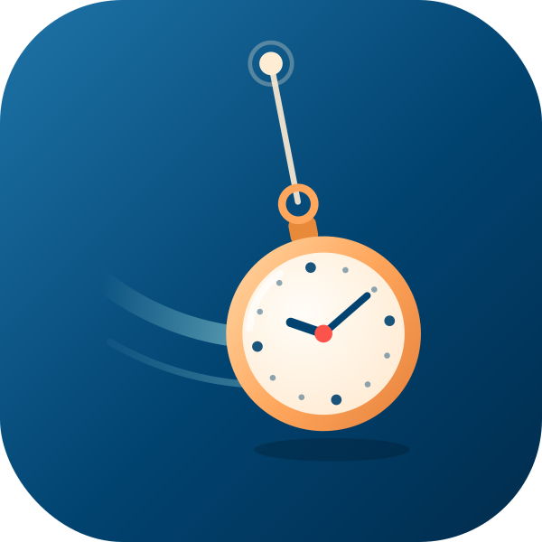
A web app that turns an EDF polysomnography recording into stage composition, a hypnogram, a spectrogram and sleep architecture markers, computed entirely in the browser with mrpheus and hypnoR.
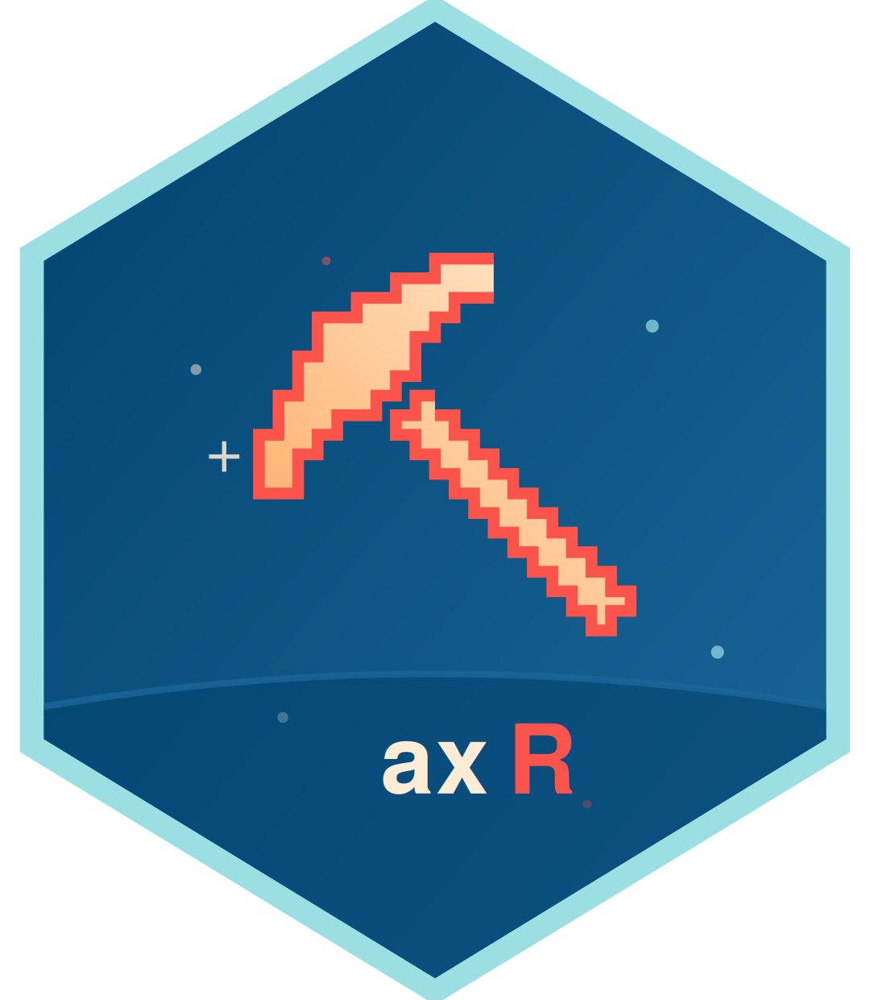
Device discovery, status, settings, and data download for Axivity AX3/AX6 accelerometer devices, plus direct parsing of .cwa files and Condor Instruments ActTrust .txt exports into a tidy epoch shape.
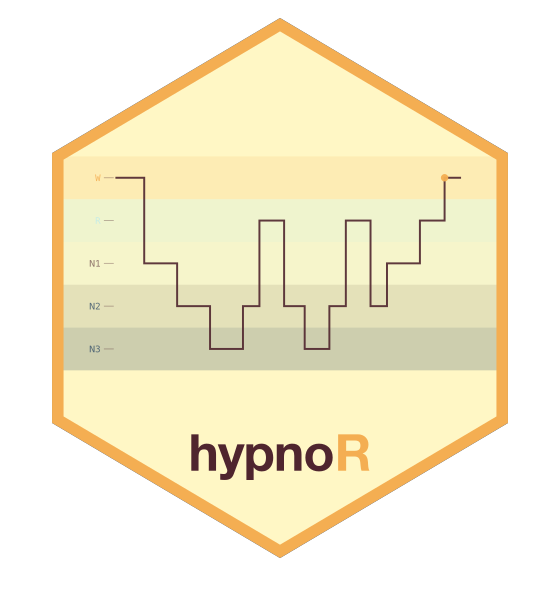
Hypnogram ingestion, sleep architecture metric computation, cycle segmentation, and transition analysis for both full AASM and coarse actigraphy-derived staging, with publication-ready plotting.
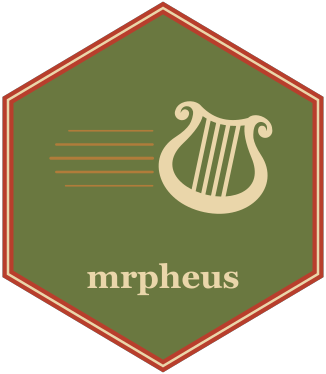
Ingests and processes multi-modal physiological recordings — polysomnography (EDF/EDF+), MRI-concurrent physiological logs, and EEG — extracting cardiac, respiratory, and neural rhythm features, including automatic AASM sleep staging.
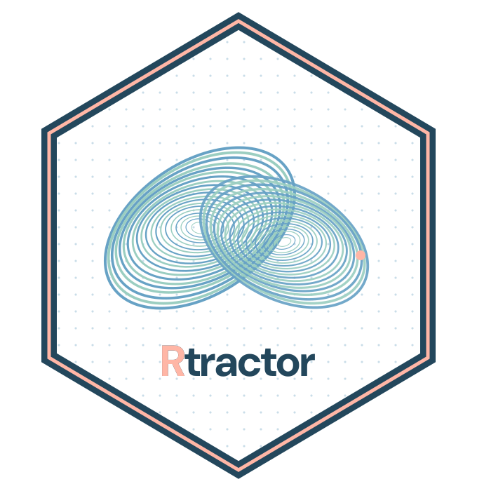
A shared complexity toolkit for the Circadia Lab / CoDe-Neuro Lab ecosystem — entropy, fractal/multifractal measures, Lyapunov exponents, multiscale metrics, and recurrence quantification analysis for any numeric time series.
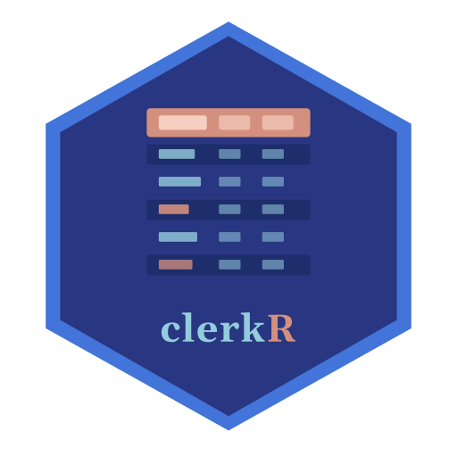
An R package that transforms standard data frames into publication-ready tables for biomedical and neuroscience manuscripts — descriptive/Table 1, heritability, correlation, and regression archetypes — with consistent theming and a unified…
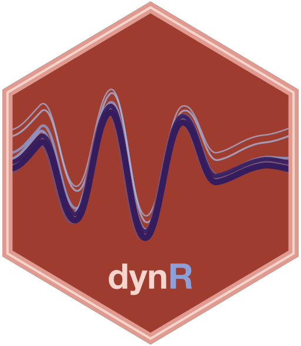
An R port of the Python dynfc library for computing dynamic connectivity (dynFC) representations — phase-based (LEiDA, Kuramoto) and correlation-based (sliding-window, edge-centric cofluctuation) methods — from multivariate neurophysiological…
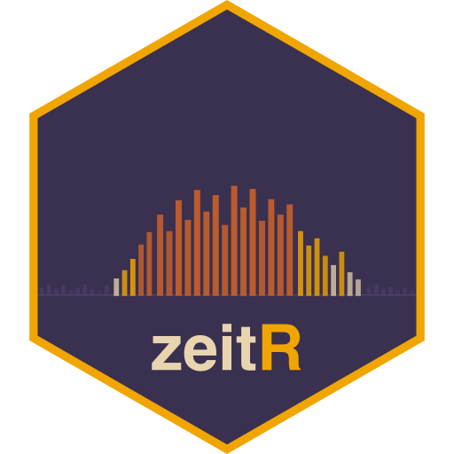
An R package for importing raw actigraphy recordings and running a complete rest–activity pipeline — off-wrist detection, sleep period identification, WASO computation, and non-parametric circadian rhythm analysis.
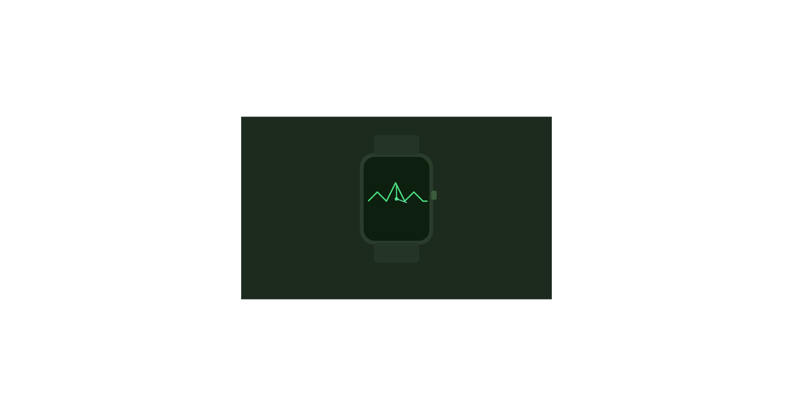
A custom InfiniTime firmware fork and companion web app for the PineTime smartwatch, optimised for research data collection. Currently in active development.
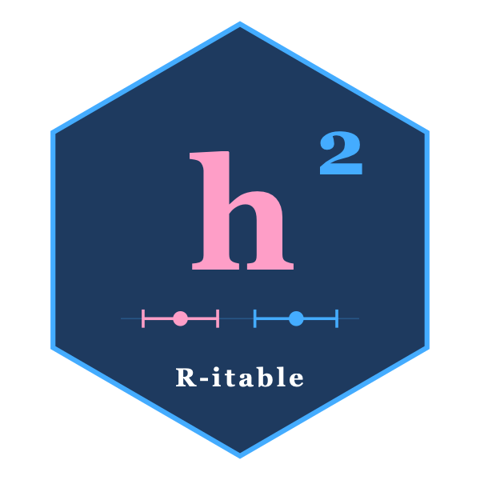
An R package for profile-likelihood variance-components heritability estimation in family cohort studies. No SOLAR Eclipse required.
A lightweight web app for scoring validated research questionnaires in the browser. No installation required.
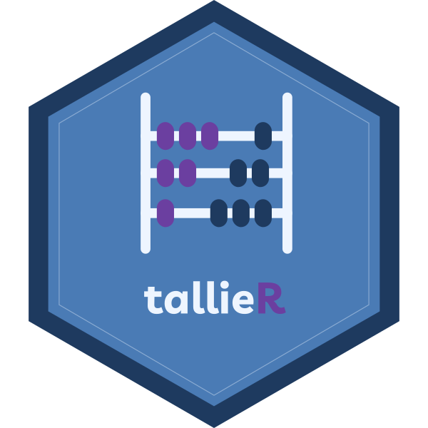
An R package for importing, re-scoring, and tidying questionnaire data collected with the ScoreMe app.
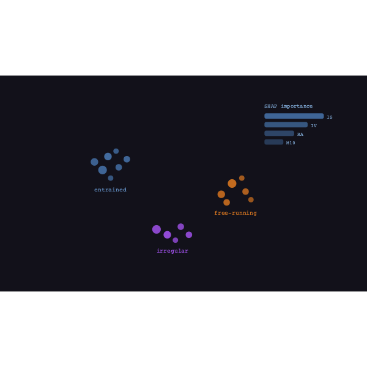
A data-driven framework for identifying circadian phenotypes in visually impaired participants using non-parametric actigraphy metrics, dimensionality reduction, clustering, and SHAP-based interpretation.
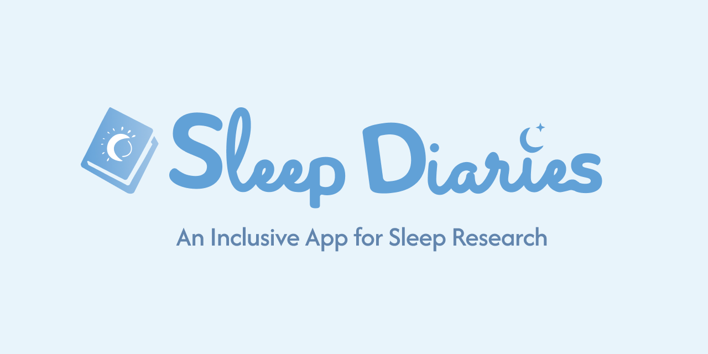
An open-source mobile app for collecting sleep diary data in clinical and research settings, built with React Native & Expo.
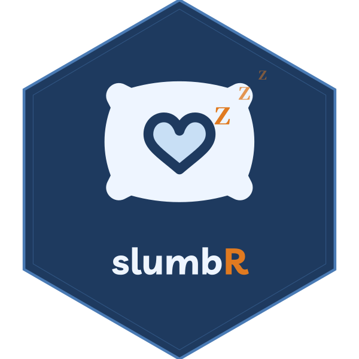
An R package for processing, scoring, and visualising sleep diary data collected with the Sleep Diaries app.
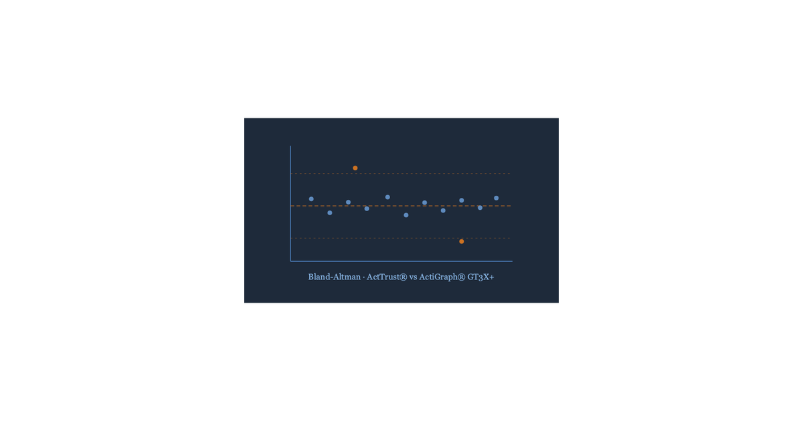
A fully reproducible R/Quarto pipeline validating the ActTrust® device for energy expenditure and physical activity classification, benchmarked against the ActiGraph® GT3X+ and indirect calorimetry.
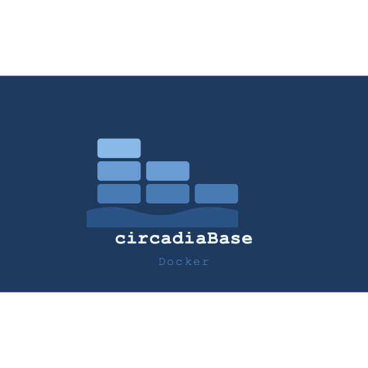
A Docker template bundling a full chronobiology and actigraphy analysis stack — Jupyter + RStudio — launchable with a single command.
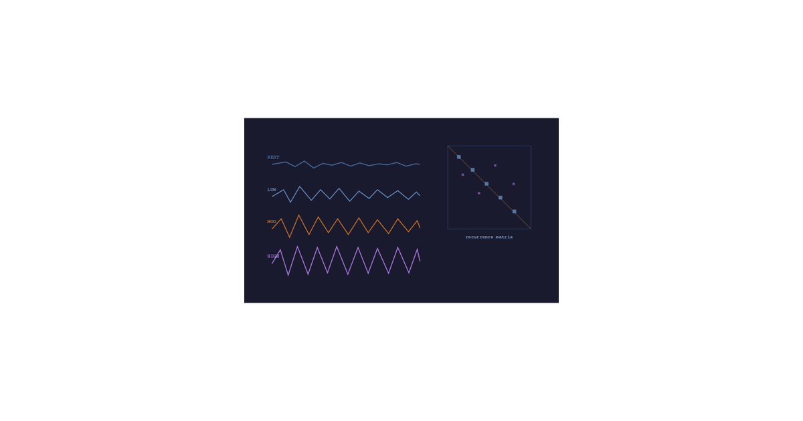
An R analysis pipeline examining recurrence-matrix entropy in scalp EEG signals recorded during cycling and rest across four behavioural conditions in healthy adults.